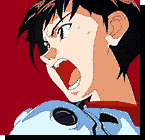
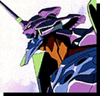
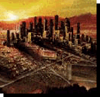

| Character Studies Shinji Ikari |
|  | Thought Process Shinji is probably the most psychologically scarred character within the story, although not by much. He is driven by anger, and by his inability to conceptualise the source of that anger. Shinji sees himself as being alone, more, being abandoned, and fails constantly to see that it is his own character that forces that abandonment. He draws lonliness apon himself, a self-destructive structure, which alienates himself from everyone, even himself. He lives with Misato Katsuragi, who before Shinji's time was alone herself except for her pet penguin, Pen Pen. Infact, all of Shinji's work associates seem to have this lifestyle. Only since his arrival have people started to open up to each other more, as if his prescence and attitude causes others to open up not only to him but to others. Misato seems to have opened up a great deal to Shinji. Kensuke Aida best summed this up in his statement '..She shows you a side of herself that nobody else would see. That means she's family..'. Shinji considers himself, probably quite rightly, alienated from his father, and under the time of the seventeenth angel, orphaned from his mother, and dotes on Misato like an older sister. In her, he sees both a mother he never knew, who known when to scold, when to forgive, and also a mentor; one who can teach new social structures, and work ethics. |
|  | Relationships Asuka: In Asuka Sjinhi sees a desire for approval. Bceuase of her competitive nature, he sees the challenge of becoming more than Asuka inside the Evas, in the sync ratio, and in the field. When Shinji goes well, Asuka loses faith inherself. When Asuka outperforms all, Shinji feels depressed. This relationship creates a kind of holding pattern for Shinji's moods and self-confidence. Shinji has a crush on her. Rei: In Rei he sees both himself and his mother. In Rei's methodology towards everyday duties, and in her reluctance to open up to thers, he feels a kinship towards her he can't explain. In fact, his relationship with Rei goes deeper than he himself can admit to, as her openness with his father, and her obsfucated history baffles him. In fact, he doesn't even see the potential inside Rei to be his half-sister, as alike in thoughts and deeds they are. Gendou: As the Commander of NERV, and one of the most powerful men on the planet, it is not improbably that others would feel at a tangent from him, as thus it is with Shinji. He feels that his father abandoned him at an early age, around the time his mother Yui vanished, or supposedly died. Shinji in fact ran away from his father for reasons he doesn't really remember, and went to live out a dull, meaningless life with his sensei, with whom he schooled and learned. His position from his father he sees as a widening gap, but a gap he feels could be bridged, if only he could get his attention. He fails to see the reality of the situation: that Gendou has but himself off from the world at large, from his family, his relationship with Shinji. To him, there are merely tools and objectives, and nothing may stand in the way. Misato: |
|  | Experiences In battle... |